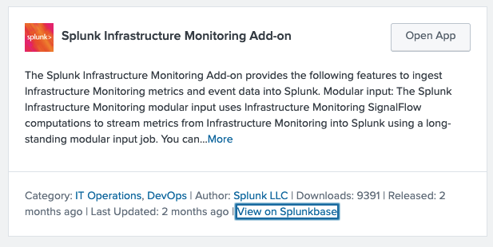

2. Installation
Overview
The Splunk Infrastructure Monitoring Add-on is available on Splunkbase. It can be downloaded and installed directly from within Splunk.
Steps
1. Open the App Browser
In your Splunk instance, navigate to:
Apps > Find More Apps
2. Search for the Add-on
In the search bar, type:
Splunk Infrastructure Monitoring Add-on
You should see a result similar to the screenshot below:

3. Install
Click the Install button next to the add-on and follow the prompts to complete the installation.
✅ After installation, the add-on will appear in your Apps list as Splunk Infrastructure Monitoring Add-on.